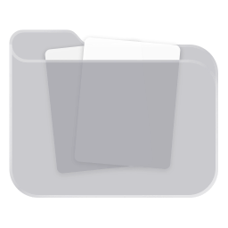

Liquid Folders
Make your macOS folders Liquid Glass
Free · macOS 26 (Tahoe) or later · Apple silicon or Intel
Getting started
- Unzip and drag Liquid Folder into Applications, then open it.
- If macOS can't verify it: System Settings → Privacy & Security, then Open Anyway.
- Allow it under Privacy & Security → Accessibility.
- Right-click a folder → Quick Actions → Liquify.
Or use Terminal
npm
npm install liquid-foldersHomebrew
brew trust zupersun/tap
brew install --cask zupersun/tap/liquid-folders